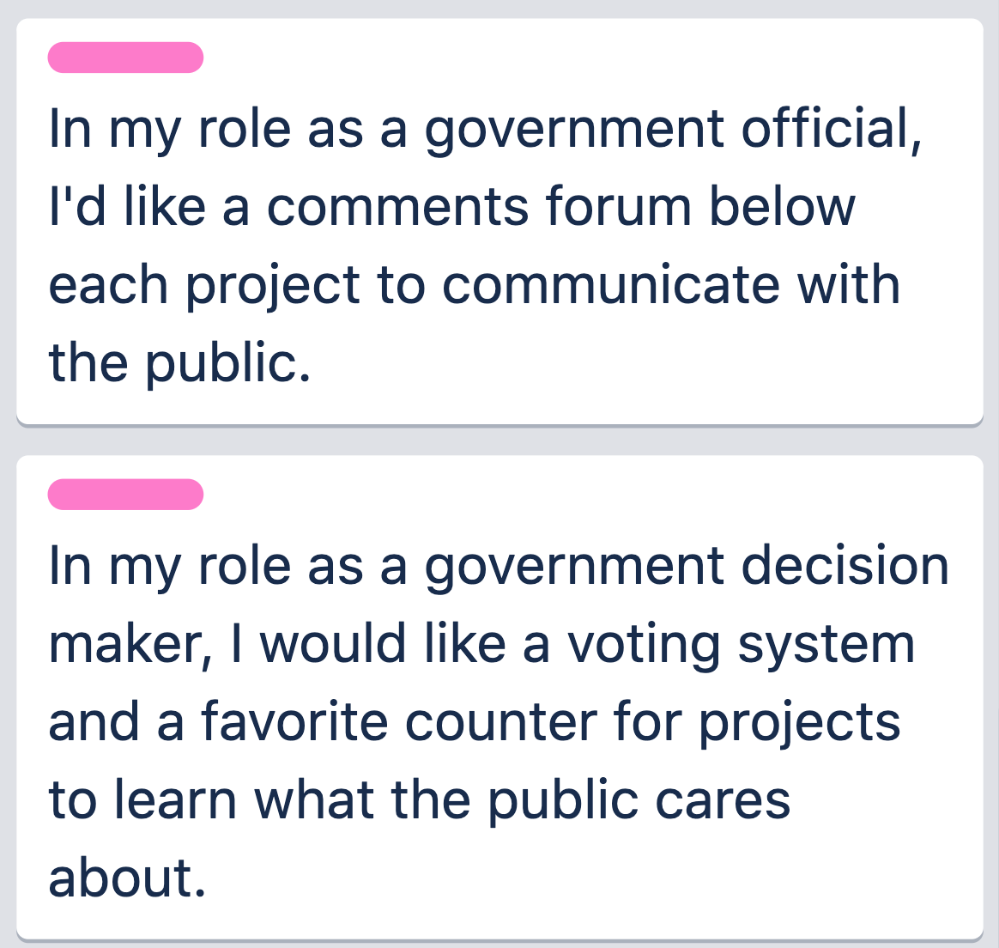
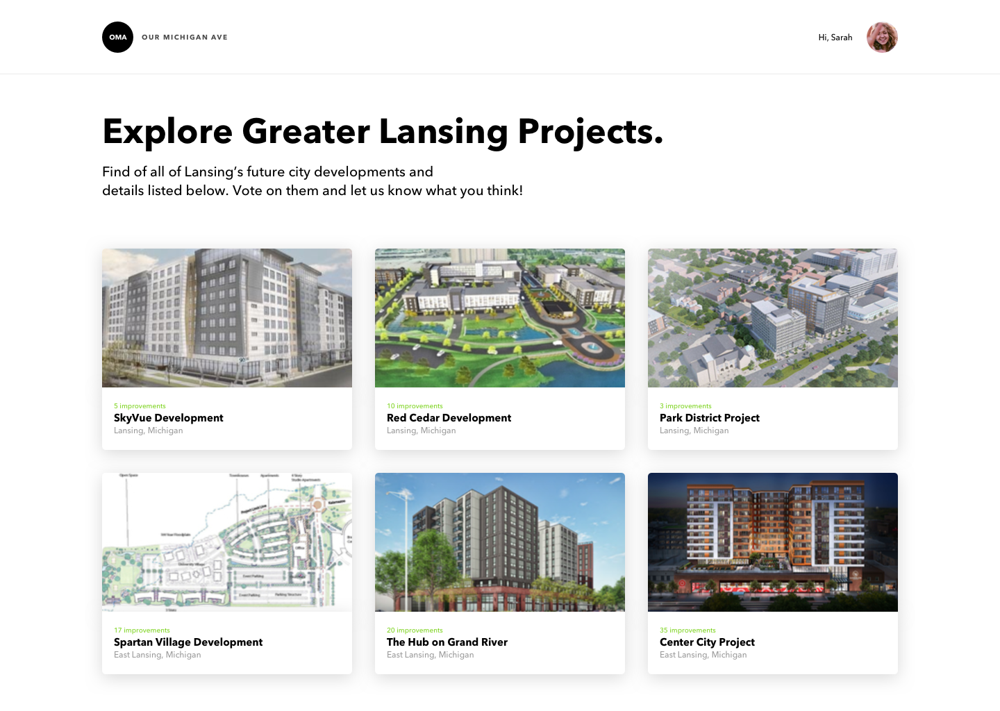
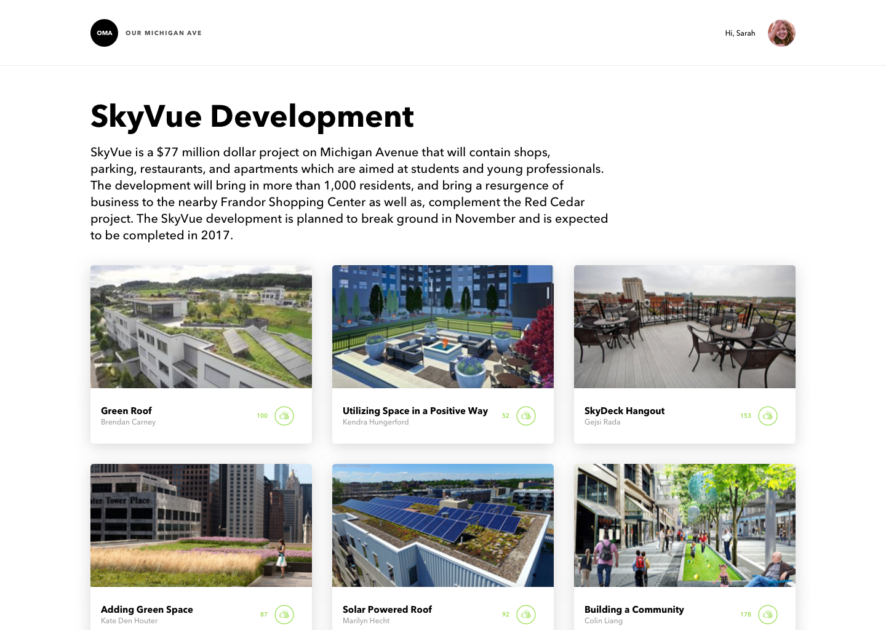
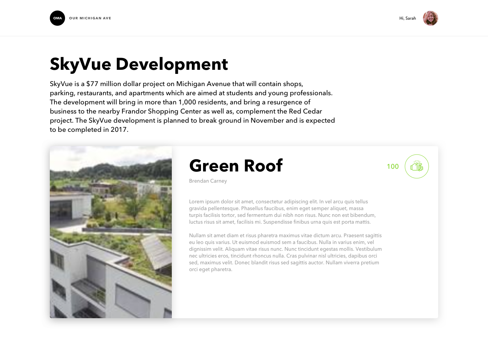

Improving community engagement in the Greater Lansing Area
I led a team of 7 students to design, test, and develop two features on www.ourmichiganave.org. Our proposed solutions will improve the content management, organization, design, community engagement, and user experience on the site.
The challenge
- Improving content management on the site by reducing clutter.
- Providing features that allow the community to share ideas and opinions.
- Learning Ruby on Rails, rails gems, and scss styling.
The approach
- Researching the needs of students, young professionals business owners, and government officials by conducting interviews and creating user stories.
- Practicing cross-functional team leadership, agile development, and test-driven development.
- Design, test, and develop at least two useful features with Ruby on Rails and Javascript.
my role
UX Designer, Front-End Developer
project type
Student Project
project duration
3 Months
tools
Sketch, Figma, Trello, Ruby on Rails, SCSS, Javascript, Bootstrap
Brief project description
The Our Michigan Avenue project is led by Professor John Monberg at Michigan State University. He is backed by over 50 stakeholders in the Greater Lansing Area, passionate about improving the community through collaboration and community input. Of the 30 students working on this project, I led a cross-functional team of 7. The team included ui and ux designers and professional writing majors.
Gathering research, sketching ideas
Our team conducted a total of 4 interviews with government officials to learn more about what information is most useful from the public. We learned that it is valuable to gather opinions on infrastructure projects in the form of voting and civil discussion. From here, we created user scenarios. We applied our research to some brainstorming sessions and sketched out some low fidelity wireframes.
Finalizing our design
I designed the user experience of the features and helped with the user interface design. Our high-fidelity mockup helped organize content on the pages and reduce clutter. The voting feature allows community members to voice their opinion on local projects. We also added a comments section to the website using disqus. Finally, I coded our features in Ruby on Rails using Bootstrap for modals and javascript for no-refresh voting functionality.
  